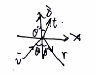
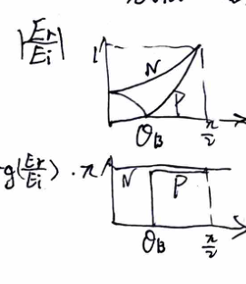
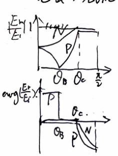
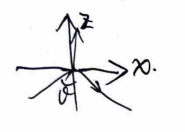
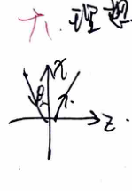
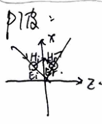
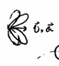
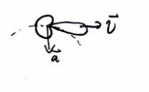

Chapter 3
Electromagnetics
I. Summary
Charge: $\rho = \rho_f + \rho_p = \rho_f - \nabla \cdot \vec{P}$
Current: $\vec{J} = \vec{J}_f + \vec{J}_m + \vec{J}_p = \vec{J}_f + \nabla \times \vec{M} + \frac{\partial \vec{P}}{\partial t}$, where $\vec{J}_f = \vec{J}_c + \vec{J}_e$
Maxwell's equations:
$$ \begin{cases} \nabla \times \vec{E} = -\frac{\partial \vec{B}}{\partial t} \\ \nabla \times \vec{H} = \vec{J}_f + \frac{\partial \vec{D}}{\partial t} \\ \nabla \cdot \vec{D} = \rho_f \\ \nabla \cdot \vec{B} = 0 \end{cases} $$Boundary conditions:
$$ \begin{cases} \hat{n} \times (\vec{E}_2 - \vec{E}_1) = 0 \\ \hat{n} \times (\vec{H}_2 - \vec{H}_1) = \vec{J}_s \\ \hat{n} \cdot (\vec{D}_2 - \vec{D}_1) = \rho_s \\ \hat{n} \cdot (\vec{B}_2 - \vec{B}_1) = 0 \end{cases} $$Constitutive Relations:
- Linear, isotropic, non-dispersive: $\vec{B} = \mu \vec{H}$, $\vec{D} = \varepsilon \vec{E}$, $\vec{J}_c = \sigma \vec{E}$.
- Dispersive (Causality): $\vec{D}(t) = \varepsilon_0 \int_{-\infty}^t \varepsilon_r(t - t') \vec{E}(t') dt'$, $\vec{B}(t) = \mu_0 \int_{-\infty}^t \mu_r(t - t') \vec{H}(t') dt'$.
Poynting Theorem:
$$ -\nabla \cdot \vec{S} = \frac{\partial w_e}{\partial t} + \frac{\partial w_m}{\partial t} + p_d + p_s $$where $\vec{S} = \vec{E} \times \vec{H}$, $w_e = \frac{1}{2} \vec{E} \cdot \vec{D}$, $w_m = \frac{1}{2} \vec{B} \cdot \vec{H}$, $p_d = \sigma E^2$, and $p_s = \vec{J}_e \cdot \vec{E}$.
Time-Harmonic Field / Sources:
$$ \begin{cases} \nabla \times \tilde{\vec{E}} = i\omega \tilde{\vec{B}} \\ \nabla \times \tilde{\vec{H}} = \tilde{\vec{J}}_f - i\omega \tilde{\vec{D}} \\ \nabla \cdot \tilde{\vec{D}} = \tilde{\rho}_f \\ \nabla \cdot \tilde{\vec{B}} = 0 \end{cases} $$Linear, isotropic, dispersive: $\tilde{\vec{D}}(\omega) = \varepsilon(\omega) \tilde{\vec{E}}(\omega)$, $\tilde{\vec{B}}(\omega) = \mu(\omega) \tilde{\vec{H}}(\omega)$.
Time-average Poynting Theorem:
$$ -\nabla \cdot \tilde{\vec{S}} = 2i\omega(\tilde{w}_e - \tilde{w}_m) + \frac{1}{2} \sigma \tilde{\vec{E}} \cdot \tilde{\vec{E}}^* + \frac{1}{2} \tilde{\vec{J}}_e^* \cdot \tilde{\vec{E}} $$where $\tilde{\vec{S}} = \frac{1}{2} \tilde{\vec{E}} \times \tilde{\vec{H}}^*$, $\tilde{w}_e = \frac{1}{4} \tilde{\vec{E}} \cdot \tilde{\vec{D}}^*$, $\tilde{w}_m = \frac{1}{4} \tilde{\vec{B}} \cdot \tilde{\vec{H}}^*$.
Therefore, $-\nabla \cdot \langle \vec{S} \rangle = \frac{1}{2} \omega \varepsilon'' |\tilde{E}|^2 + \frac{1}{2} \omega \mu'' |\tilde{H}|^2 + \frac{1}{2} \sigma |\tilde{E}|^2 + Re\left\{\frac{\tilde{\vec{J}}_e^* \cdot \tilde{\vec{E}}}{2}\right\}$, and $\langle \vec{S} \rangle = \frac{1}{2} Re\{\tilde{\vec{E}} \times \tilde{\vec{H}}^*\}$.
II. Maxwell Uniqueness Theorem
Given that in a volume $V$ at $t=0$, $\vec{E}$ and $\vec{H}$ are known, and on the boundary $S$ for $t \ge 0$, either $\vec{E}_t$ or $\vec{H}_t$ is known. Then $\vec{E}(t), \vec{H}(t)$ inside the volume is uniquely determined.
Proof:
Assume $(\vec{E}_1, \vec{H}_1)$ and $(\vec{E}_2, \vec{H}_2)$ are two sets of solutions. Let $\vec{E} = \vec{E}_2 - \vec{E}_1$ and $\vec{H} = \vec{H}_2 - \vec{H}_1$. The difference field satisfies:
$$ \begin{cases} \nabla \times \vec{E} = -\mu \frac{\partial \vec{H}}{\partial t} \\ \nabla \times \vec{H} = \sigma \vec{E} + \varepsilon \frac{\partial \vec{E}}{\partial t} \\ \nabla \cdot \vec{D} = 0 \\ \nabla \cdot \vec{B} = 0 \end{cases} $$Applying the Poynting theorem to the difference field:
$$ -\oint_S (\vec{E} \times \vec{H}) \cdot d\vec{S} = \frac{d}{dt} \int_V \left(\frac{1}{2}\varepsilon \vec{E}^2 + \frac{1}{2}\mu \vec{H}^2\right) dV + \int_V \sigma \vec{E}^2 dV $$Since $\vec{E}_t |_S = 0$ or $\vec{H}_t |_S = 0$ for $t \ge 0$, the surface integral vanishes ($\oint (\vec{E} \times \vec{H}) \cdot d\vec{S} = 0$).
$$ \therefore \frac{d}{dt} \int_V \left(\frac{1}{2}\varepsilon \vec{E}^2 + \frac{1}{2}\mu \vec{H}^2\right) dV = -\int_V \sigma \vec{E}^2 dV \le 0 $$At $t=0$, the fields are identical, so $\int_V \left(\frac{1}{2}\varepsilon \vec{E}^2 + \frac{1}{2}\mu \vec{H}^2\right) dV = 0$. Since the integral is non-negative and its derivative is non-positive, it must remain zero for all $t \ge 0$.
$$ \therefore \frac{1}{2}\varepsilon \vec{E}^2 + \frac{1}{2}\mu \vec{H}^2 = 0 \implies \vec{E}=0, \vec{H}=0 $$Thus, the solution is unique.
III. Vacuum / Dielectric
Solving Maxwell's equations in a source-free region gives:
$$ \begin{cases} \nabla^2 \tilde{\vec{E}} + k^2 \tilde{\vec{E}} = 0 \\ \nabla \cdot \tilde{\vec{E}} = 0 \\ \tilde{\vec{B}} = -\frac{i}{\omega} \nabla \times \tilde{\vec{E}} \end{cases} \quad \text{or} \quad \begin{cases} \nabla^2 \tilde{\vec{B}} + k^2 \tilde{\vec{B}} = 0 \\ \nabla \cdot \tilde{\vec{B}} = 0 \\ \tilde{\vec{E}} = \frac{i}{\omega \mu \varepsilon} \nabla \times \tilde{\vec{B}} \end{cases} $$Uniform plane wave solution:
$$ \tilde{\vec{E}} = \tilde{\vec{E}}_0 e^{i(\vec{k} \cdot \vec{x} - \omega t)}, \quad \vec{E}_{real} = Re\{\tilde{\vec{E}}\}, \quad \tilde{\vec{H}} = \frac{1}{\omega \mu} \vec{k} \times \tilde{\vec{E}} = \frac{1}{\eta} \hat{k} \times \tilde{\vec{E}} $$where $\eta = \sqrt{\frac{\mu}{\varepsilon}} \approx 120\pi \approx 377 \Omega$ in vacuum.
- Uniform: Equi-amplitude surfaces are planes.
- Plane: Equiphase surfaces are planes.
- Transverse wave: $\vec{k} \cdot \tilde{\vec{E}} = 0$.
IV. On the Surface of Dielectrics

From phase matching at the boundary: $\vec{k} \cdot \vec{x} = \vec{k}' \cdot \vec{x} = \vec{k}'' \cdot \vec{x} \implies k_x = k_x' = k_x''$.
Since $k_x = k \sin\theta, k_x' = k' \sin\theta', k_x'' = k'' \sin\theta''$, and $k' = k = \frac{\omega}{v_1}, k'' = \frac{\omega}{v_2}$, we get:
$$ \theta = \theta', \quad \frac{\sin\theta}{\sin\theta''} = \frac{v_1}{v_2} = n_{21} \quad \text{(Snell's Law)} $$N wave (perpendicular polarization)

$$ \begin{cases} E + E' = E'' \\ H \cos\theta - H' \cos\theta' = H'' \cos\theta'' \\ H = \sqrt{\frac{\varepsilon}{\mu}} E \quad (\text{in each medium}) \end{cases} $$For an optically thinner to denser medium, $E'/E_1 < 0$ for all $\theta$ (half-wave loss occurs at all incidence angles).
P wave (parallel polarization)

$$ \begin{cases} E \cos\theta - E' \cos\theta' = E'' \cos\theta'' \\ H + H' = H'' \\ H = \sqrt{\frac{\varepsilon}{\mu}} E \quad (\text{in each medium}) \end{cases} $$For an optically thinner to denser medium, half-wave loss occurs when $\theta > \theta_B$.
Discussions:
- Brewster angle: $\theta_B = \arctan(n_2 / n_1)$. At this angle, the P wave is totally transmitted ($E'=0$).
- Half-wave loss: Occurs for N wave (thinner → denser) and P wave (thinner → denser for $\theta > \theta_B$, denser → thinner for $\theta < \theta_B$).
- Total reflection: When $k_z'' = \sqrt{k''^2 - k_x''^2} = i k \sqrt{\sin^2\theta - n_{21}^2}$.
Let $\kappa = k \sqrt{\sin^2\theta - n_{21}^2}$. The transmitted wave becomes an evanescent wave:
$$ \tilde{\vec{E}}'' = \tilde{\vec{E}}_0'' e^{-\kappa z} e^{i(k_x x - \omega t)} \quad \text{(Non-uniform plane wave)} $$Its phase velocity $v_p'' = \frac{\omega}{k_x} < \frac{\omega}{k''}$ (since $k_x > k''$), making it a slow wave.
The total field in medium 1 is $\vec{E} + \vec{E}' = 2\vec{E}_{01} \cos(k_z z + \phi) e^{i(k_x x - \omega t - \phi)}$, where $E'/E = e^{-2i\phi}$. This is also a non-uniform plane wave with $v_p = \frac{\omega}{k_x} > \frac{\omega}{k}$ (since $k_x < k$), making it a fast wave.
V. In Conductors
Solving Maxwell's equations gives:
$$ \begin{cases} \nabla^2 \tilde{\vec{E}} + \omega^2 \mu \tilde{\varepsilon} \tilde{\vec{E}} = 0 \\ \nabla \cdot \tilde{\vec{E}} = 0 \end{cases} $$where the complex permittivity $\tilde{\varepsilon} = \varepsilon + i \frac{\sigma}{\omega}$, and complex wavenumber squared $\tilde{k}^2 = \omega^2 \mu \tilde{\varepsilon} = (\beta + i\alpha)^2$.
Uniform plane wave solution:
$$ \tilde{\vec{E}} = \tilde{\vec{E}}_0 e^{-\vec{\alpha} \cdot \vec{x}} e^{i(\vec{\beta} \cdot \vec{x} - \omega t)}, \quad \tilde{\vec{H}} = \frac{1}{\omega\mu} (\vec{\beta} + i\vec{\alpha}) \times \tilde{\vec{E}} $$- Uniformity condition: defined by $e^{-\vec{\alpha} \cdot \vec{x}}$
- Phase fronts: defined by $\vec{\beta} \cdot \vec{x} - \omega t$
- Transversality: $(\vec{\beta} + i\vec{\alpha}) \cdot \tilde{\vec{E}} = 0$, but note that $\vec{\beta} \cdot \tilde{\vec{E}} \neq 0$ generally.
VI. On the Surface of Good Conductors

For a good conductor, $\frac{\sigma}{\varepsilon\omega} \gg 1$. Phase matching gives $k_x = k_x' = \beta_x + i \alpha_x \implies \alpha_x = 0, \beta_x = k_x$.
$$ \tilde{k}^2 = \beta^2 - \alpha^2 + 2i \vec{\alpha} \cdot \vec{\beta} \approx i \omega \mu \sigma $$ $$ \therefore \beta^2 - \alpha^2 \approx 0, \quad \alpha_z \beta_z = \frac{1}{2} \omega \mu \sigma \gg \frac{1}{2} k_x^2 $$So, $\alpha_z \approx \beta_z \approx \sqrt{\frac{\omega \mu \sigma}{2}}$, and $\beta_x \ll \beta_z$. The skin depth is $\delta = \frac{1}{\alpha_z} = \sqrt{\frac{2}{\omega \mu \sigma}}$.
$$ \tilde{\vec{H}} \approx \frac{1}{\omega\mu} (\beta_z + i\alpha_z) \hat{n} \times \tilde{\vec{E}} \approx \sqrt{\frac{\sigma}{\omega\mu}} e^{i\frac{\pi}{4}} \hat{n} \times \tilde{\vec{E}} $$$\vec{H}$ lags $\vec{E}$ by $\frac{\pi}{4}$, and $\left|\frac{\tilde{H}}{\tilde{E}}\right| \gg 1$, meaning magnetic field energy dominates electric field energy inside the conductor.
For both N and P waves at perpendicular incidence, the reflection coefficient is $R \approx 1 - 2\sqrt{\frac{2\omega\varepsilon}{\sigma}}$.
Discussion: Electromagnetic wave in good conductor
$$ \vec{S} = \frac{1}{2} Re\{\tilde{\vec{E}} \times \tilde{\vec{H}}^*\} = \frac{1}{2} \sqrt{\frac{\sigma}{2\omega\mu}} E_0^2 e^{-2\alpha z} \hat{n} \implies S|_{z=0} = \frac{1}{2} \sqrt{\frac{\sigma}{2\omega\mu}} E_0^2 $$The Joule heating power density is $P = \frac{1}{2} \sigma E_0^2 e^{-2\alpha z}$. The total power loss per unit area is $P_L = \int_0^\infty P dz = S|_{z=0}$.
Defining the surface current $\tilde{\vec{J}}_S = \hat{n} \times \tilde{\vec{H}}$ and surface resistance $R_S = \frac{1}{\sigma \delta}$, we can express the power loss as $P_L = \frac{1}{2} |\tilde{\vec{J}}_S|^2 R_S$.
VII. On the Surface of Ideal Conductors
For an ideal conductor, $\sigma \to \infty$ and $\delta \to 0$. The boundary conditions become:
$$ \hat{n} \times \vec{E} = 0, \quad \hat{n} \times \vec{H} = \vec{J}_s, \quad \hat{n} \cdot \vec{D} = \rho_s, \quad \hat{n} \cdot \vec{B} = 0 $$N wave:

$E_{i0} = -E_{r0} = E_0$.
$$ \tilde{\vec{E}}_i = E_0 e^{i(k_x x + k_z z - \omega t)} \hat{e}_y, \quad \tilde{\vec{E}}_r = -E_0 e^{i(k_x x - k_z z - \omega t)} \hat{e}_y $$ $$ \therefore \tilde{\vec{E}} = \tilde{\vec{E}}_i + \tilde{\vec{E}}_r = -2i E_0 \sin(k_z z) e^{i(k_x x - \omega t)} \hat{e}_y $$ $$ \tilde{\vec{H}} = \frac{1}{i\omega\mu} \nabla \times \tilde{\vec{E}} = -\frac{2 E_0}{\omega\mu} \left( k_z \cos(k_z z) \hat{e}_x - i k_x \sin(k_z z) \hat{e}_z \right) e^{i(k_x x - \omega t)} $$Surface charges and currents:
$$ \rho_s = \varepsilon_0 \hat{n} \cdot \vec{E} |_{z=0} = 0, \quad \vec{J}_s = \hat{n} \times \vec{H} |_{z=0} = -\frac{2 k_z E_0}{\omega\mu} \cos(k_x x - \omega t) \hat{e}_y $$P wave:

Because $E_{iz} = -E_{rz} = E_z$, we have $E_{ix} = E_{rx} = E_x$.
$$ \tilde{\vec{E}}_i = (E_x \hat{e}_x + E_z \hat{e}_z) e^{i(k_x x + k_z z - \omega t)}, \quad \tilde{\vec{E}}_r = (-E_x \hat{e}_x + E_z \hat{e}_z) e^{i(k_x x - k_z z - \omega t)} $$ $$ \therefore \tilde{\vec{E}} = \tilde{\vec{E}}_i + \tilde{\vec{E}}_r = \left( 2E_x \cos(k_z z) \hat{e}_x - 2iE_z \sin(k_z z) \hat{e}_z \right) e^{i(k_x x - \omega t)} $$ $$ \therefore \tilde{\vec{H}} = \frac{1}{i\omega\mu} \nabla \times \tilde{\vec{E}} = \frac{2}{\omega\mu} (k_z E_x + k_x E_z) \cos(k_z z) e^{i(k_x x - \omega t)} \hat{e}_y $$Surface charges and currents:
$$ \rho_s = 2\varepsilon_0 E_x \cos(k_x x - \omega t), \quad \vec{J}_s = \frac{2}{\omega\mu} (k_z E_x + k_x E_z) \cos(k_x x - \omega t) \hat{e}_y $$VIII. Electromagnetic Radiation
Using scalar and vector potentials:
$$ \vec{E} = -\nabla\varphi - \frac{\partial\vec{A}}{\partial t}, \quad \vec{B} = \nabla \times \vec{A} $$Gauge transformations: $\vec{A} \to \vec{A} + \nabla\psi, \quad \varphi \to \varphi - \frac{\partial\psi}{\partial t}$.
- Coulomb gauge: $\nabla \cdot \vec{A} = 0$ (Useful for static magnetic fields, Quantum mechanics).
- Lorentz gauge: $\nabla \cdot \vec{A} + \frac{1}{c^2} \frac{\partial\varphi}{\partial t} = 0$ (Useful for radiation, Relativity).
Under Lorentz gauge, the wave equations are:
$$ \begin{cases} \nabla^2\varphi - \frac{1}{c^2}\frac{\partial^2\varphi}{\partial t^2} = -\frac{\rho}{\varepsilon_0} \\ \nabla^2\vec{A} - \frac{1}{c^2}\frac{\partial^2\vec{A}}{\partial t^2} = -\mu_0\vec{J} \end{cases} \implies \begin{cases} \varphi = \frac{1}{4\pi\varepsilon_0} \int \frac{\rho(\vec{x}', t_r)}{r} dV' \\ \vec{A} = \frac{\mu_0}{4\pi} \int \frac{\vec{J}(\vec{x}', t_r)}{r} dV' \end{cases} $$where $t_r = t - r/c$ is the retarded time. This leads to Jefimenko's equations:
$$ \vec{E} = \frac{1}{4\pi\varepsilon_0} \int \left[ \frac{[\rho]}{r^2}\hat{r} + \frac{[\dot{\rho}]}{cr}\hat{r} - \frac{[\dot{\vec{J}}]}{c^2 r} \right] dV', \quad \vec{B} = \frac{\mu_0}{4\pi} \int \left( \frac{[\vec{J}]}{r^2} + \frac{[\dot{\vec{J}}]}{cr} \right) \times \hat{r} dV' $$Time-Harmonic Field
For far-field observation ($r \gg l$, where $l$ is the system dimension):
- $r \sim l$: Example: Half-wave antenna, radiation resistance $R_r = 73.2\Omega$.
- $\lambda \gg r$: Near (static) zone. Fields behave like static fields $\sim \frac{1}{r^2}$.
- $\lambda \ll r$: Far (radiation) zone. Fields behave as radiation fields $\sim \frac{1}{r}$.
Multipole expansion in the far zone:
$$ \vec{A}(\vec{x}) \approx \frac{\mu_0}{4\pi} \int \frac{\tilde{\vec{J}}(\vec{x}') e^{ik(R - \hat{n}\cdot\vec{x}')}}{R - \hat{n}\cdot\vec{x}'} dV' \approx \frac{\mu_0}{4\pi} \left(\frac{[\dot{\vec{p}}]}{R} + \frac{[\ddot{\vec{m}}]\times\hat{n}}{cR} + \dots \right) $$- Electric dipole radiation: e.g., Short antenna. $R_r = 197 \left(\frac{l}{\lambda}\right)^2$.
- Magnetic dipole radiation: e.g., Small coil. $R_r \sim \left(\frac{l}{\lambda}\right)^4$. Weaker than electric dipole. Analogy: $\vec{p} \to \frac{\vec{m}}{c}, \vec{E} \to \vec{B}, \vec{B} \to -\frac{\vec{E}}{c}$.
IX. Radiation of Charged Particles
Liénard-Wiechert potentials:
$$ \varphi = \frac{q}{4\pi\varepsilon_0} \left[ \frac{1}{r - \vec{r}\cdot\vec{v}/c} \right]_{t_r}, \quad \vec{A} = \frac{\mu_0 q}{4\pi} \left[ \frac{\vec{v}}{r - \vec{r}\cdot\vec{v}/c} \right]_{t_r} $$The resulting fields can be decomposed as:
- $\vec{E} = \vec{E}_v + \vec{E}_a$
- $\vec{B} = \vec{B}_v + \vec{B}_a$
The velocity field ($\vec{E}_v, \vec{B}_v$) is proportional to $\frac{1}{r^2}$ and produces no net radiation to infinity. The acceleration field ($\vec{E}_a, \vec{B}_a$) is proportional to $\frac{1}{r}$ and is responsible for radiation.
Discussion:
$v \ll c$: Electric dipole radiation, $\vec{p} = e\vec{x}_0$.

$v \sim c$: Highly directional radiation patterns.
- $\vec{v} \parallel \vec{a}$: Bremsstrahlung (e.g., X-ray tube, accelerator target).
- $\vec{v} \perp \vec{a}$: Synchrotron radiation (e.g., Circular accelerators, causes huge energy loss).
